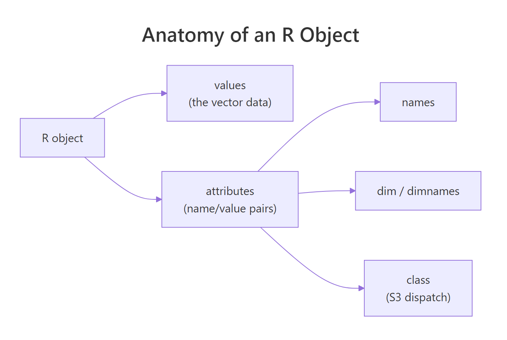
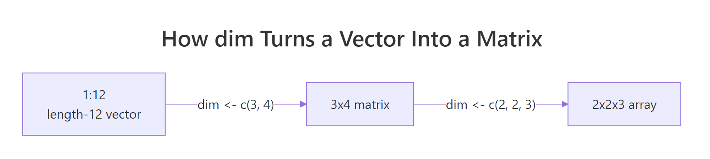

R Attributes: The Hidden Metadata That Makes R Objects Behave Differently
Every R object carries a dictionary of attributes, invisible name/value pairs like names, dim, and class. They're why the same numeric vector can print as a matrix, a data frame, or a fitted model. Learn to set, read, and strip them, and half of R's "mysterious" behaviour becomes obvious.
This post explains what attributes actually are, how the special ones (names, dim, class) transform the same underlying data, how to set attributes with attr(), structure(), and setNames(), and the surprising gotcha where arithmetic silently drops them.
Why does the same R vector print in completely different ways?
Let's start with a puzzle: the exact same twelve numbers, printed three different ways, depending on one attribute. 1:12 is a plain integer vector. Attach a dim attribute and R prints it as a matrix. Attach a class of "Date" and it prints as dates. The underlying memory is identical, only the metadata changes.
This is the single idea the post rests on: an R object is its values plus its attributes, and attributes are the lever you pull to change how any function (print, subset, mean, summary) treats that object.
The values 1:12 never moved. Adding dim(x) <- c(3, 4) attached a 2-element integer vector as a single attribute, and the print method for matrices kicked in. Setting the same attribute to NULL removed it, and the plain integer printer returned. This is exactly how matrices and arrays are implemented in base R, they're just vectors with a dim attribute.
Try it: Given y <- 1:24, turn y into a 2x3x4 three-dimensional array in one line, then check its class.
Click to reveal solution
Explanation: Any length-24 vector can become a 2×3×4 array because 2 * 3 * 4 == 24. The dim<- assignment is just shorthand for attr(y, "dim") <- c(2, 3, 4).
How do you read, set, and strip attributes in R?
There are four functions you'll use every day: attr() for one specific attribute, attributes() for the full list, structure() for setting several at once, and the specialised wrappers names(), dim(), class(), dimnames() for the attributes R gives extra-special treatment.

Figure 1: Every R object has a values payload plus an attribute dictionary. The three most common attributes (names, dim, class) are what most print/subset methods key off.
The cleanest way to build an object with several attributes at once is structure(), which wraps value-plus-attributes into one call, the idiom you'll see in most package source code.
structure() builds an object, attaches a dim attribute (so it prints as a matrix) and a dimnames attribute (so rows and columns are labelled), all in a single expression. Any function that accepts .Data and ... attribute pairs is a clean way to document what an object "is" at the point where it's created.
Try it: Create a 2x3 matrix ex_m whose values are 1:6 and which has row names "row1", "row2" and column names "A", "B", "C", all via a single structure() call.
Click to reveal solution
Explanation: structure() creates the integer vector, attaches both attributes, and R's matrix printer takes it from there. Using the two-step m <- 1:6; dim(m) <- c(2,3); ... approach is equally valid but noisier.
What makes names, dim, and class so special?
Any attribute can carry any R value, attr(x, "author") <- "Selva" is perfectly legal. But R treats a small set of attributes as special: they come with dedicated accessor functions, they're preserved or rebuilt by many operations, and setting them triggers downstream behaviour (like switching which print method runs). The big three are names, dim, and class.
| Attribute | Accessor | What it does |
|---|---|---|
names |
names(x), setNames() |
Labels each element; enables name-based subsetting (x["alice"]) |
dim |
dim(x) |
Reshapes a vector into a matrix or higher-dimensional array |
dimnames |
dimnames(x), rownames(), colnames() |
Row/column labels for matrices and arrays |
class |
class(x), class(x) <- ... |
Drives S3 method dispatch (which print, summary, [ runs) |
levels |
levels(x) |
The string lookup for factors |
row.names |
row.names(x) |
Row identifiers for data frames (legacy name) |

Figure 2: A length-12 vector becomes a 3x4 matrix, then a 2x2x3 array, purely by changing the dim attribute. Nothing in memory moves.
The Date example is the classic revelation: a Date is just a double counting days since 1970-01-01, plus a class attribute that tells print, format, and friends to interpret it as a calendar date. The factor example is similar: an integer vector plus levels (the lookup) plus class = "factor". Once you see this, S3 stops feeling magical.
class(x) <- "banana" is syntactically legal but now every generic (print, summary, [) will fail to find a method and fall back to the default. If you're inventing a class, implement at least print.banana() first, or use oldClass(x) <- NULL to reset.Try it: Build a three-element factor ex_f with values "S", "M", "L" in that order, but do it by hand with structure(), not with factor().
Click to reveal solution
Explanation: An integer vector whose values are positions into levels, with class = "factor" to trigger the factor print method. This is exactly what factor(c("S","M","L")) produces internally.
Why do attributes silently disappear after arithmetic?
Here is the foot-gun that catches almost everyone: most arithmetic and coercion operations drop attributes. If you attach a units attribute to a numeric vector and then multiply it by 2, the attribute is gone. R's rule is that only "structural" attributes (the special ones: names, dim, dimnames) are preserved, everything else is discarded unless an operation has been written to carry it through.
v loses both units and source the moment it's multiplied. w, whose only attribute is names, keeps them because names is on the "special" list that R deliberately preserves through vectorised arithmetic. This is why rolling your own attribute-carrying types usually means wrapping them in an S3 class and writing arithmetic methods yourself, or living with manual re-attachment.
class attribute (e.g. "measurement") and define Ops.measurement (the S3 group generic for arithmetic). That's exactly what packages like units, hms, and Matrix do.Try it: Create ex_w <- c(x = 1, y = 2, z = 3) with an extra attr(ex_w, "source") <- "test". After running ex_w + 1, check which attributes survived.
Click to reveal solution
Explanation: names is a structural attribute and is preserved by arithmetic. source is a custom attribute and is silently dropped. The value vector c(2, 3, 4) is unchanged, only the metadata differs.
What are the most common R attribute pitfalls?
Five patterns cause most of the "why is my object behaving like that?" moments. Each has a one-line fix once you know the shape of the problem.
Pitfalls 1 and 2 are about using the right accessor and validating length. Pitfalls 3 and 4 are about knowing which attribute each stripping helper removes (as.vector removes everything; unname removes only names/dimnames). Pitfall 5 is a reminder that R's copy-on-modify semantics mean attaching an attribute to one variable never affects another, a feature when you understand it, a puzzle when you don't.
as.vector() removes all attributes except names. If you want to really flatten an object including names, call unname(as.vector(x)). Conversely, unlist() preserves names by prefixing them with the parent list name, useful for flattening nested lists into labelled vectors.Try it: You have m <- matrix(1:6, 2, 3, dimnames = list(c("r1","r2"), c("a","b","c"))). Strip the dimnames but keep the dim, so it still prints as a 2x3 matrix but without row/column labels.
Click to reveal solution
Explanation: Setting dimnames(x) <- NULL removes that one attribute and nothing else. dim is untouched, so R still prints the object as a matrix.
Practice Exercises
Two capstone exercises that combine attribute handling with real vector work.
Exercise 1: Build a labelled 3x3 matrix from scratch
Starting from 1:9, build my_mat, a 3x3 matrix whose rows are labelled "r1","r2","r3", whose columns are labelled "c1","c2","c3", and which has an extra custom attribute experiment = "batch-01". All of it in a single structure() call.
Click to reveal solution
Explanation: structure() takes any number of attribute = value pairs. dim and dimnames are specials and change how the object prints; experiment is a custom attribute that will be dropped by arithmetic but is visible to attributes().
Exercise 2: Peek inside a Date
R Dates are secretly doubles. Without converting with as.numeric(), use attribute manipulation to show that as.Date("2026-04-11") is just the number of days since 1970-01-01 wearing a class hat. Save the raw number to my_days and confirm with class().
Click to reveal solution
Explanation: unclass() removes the class attribute but touches nothing else. What's left is the underlying double, the number of days since 1970-01-01. Setting class(d) <- NULL would also work and is equivalent.
Complete Example
A small end-to-end flow that uses attributes to turn a numeric summary into a self-describing labelled object, the kind of pattern real R packages use to return results.
The summary_obj carries four pieces of metadata, unit, sample size, generation date, and a custom class, right next to its values. That's enough to make downstream code robust: if (!inherits(x, "lab_summary")) stop(...), attr(x, "unit"), attr(x, "n"). And because arithmetic still works (R ignores the class for +), you can treat it as a plain numeric vector when convenient.
Summary
| Concept | One-line takeaway |
|---|---|
| Anatomy | An R object = values + attribute dictionary |
| Special attributes | names, dim, dimnames, class, levels get dedicated accessors and preserve behaviour |
| Access | attr(x, "name"), attributes(x), names(), dim(), class() |
| Create with metadata | structure(value, name1 = v1, name2 = v2) in one call |
| Arithmetic drops | Custom attributes vanish on x * 2; names/dim survive |
| Strip | attributes(x) <- NULL removes everything; unname() only names; as.vector() everything except names |
attributes(x) and interpret it, the "how does this work?" moment for any unfamiliar object is usually one function call away.References
- Wickham, H. Advanced R (2nd ed.), Chapter 3: Vectors, §3.3 Attributes. adv-r.hadley.nz/vectors-chap.html#attributes
- R Core Team. R Language Definition, §2.1 Basic types and attributes. cran.r-project.org/doc/manuals/r-release/R-lang.html
- R documentation:
?attr,?attributes,?structure,?setNames,?class,?oldClass. - StatisticsGlobe. attr, attributes & structure Functions in R. statisticsglobe.com/attr-attributes-structure
- R Manual. 3 Objects, their modes and attributes. rstudio.github.io/r-manuals/r-intro/Objects.html
- ETH Zurich R mirror. Object Attribute Lists (base::attributes). stat.ethz.ch/R-manual/R-devel/library/base/html/attributes.html
Continue Learning
- R Data Types: Which Type Is Your Variable?, The parent post explaining R's four base atomic types, which attributes then decorate.
- R Vectors: The Foundation of Everything in R, Vectors are the chassis that attributes attach to.
- R Lists Explained, Lists carry attributes too, and are the internal representation of every data frame.